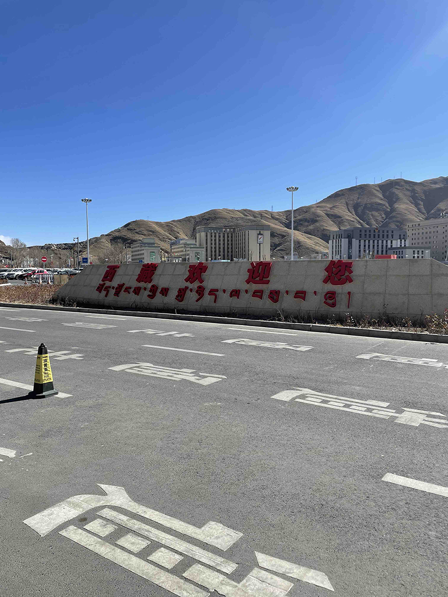
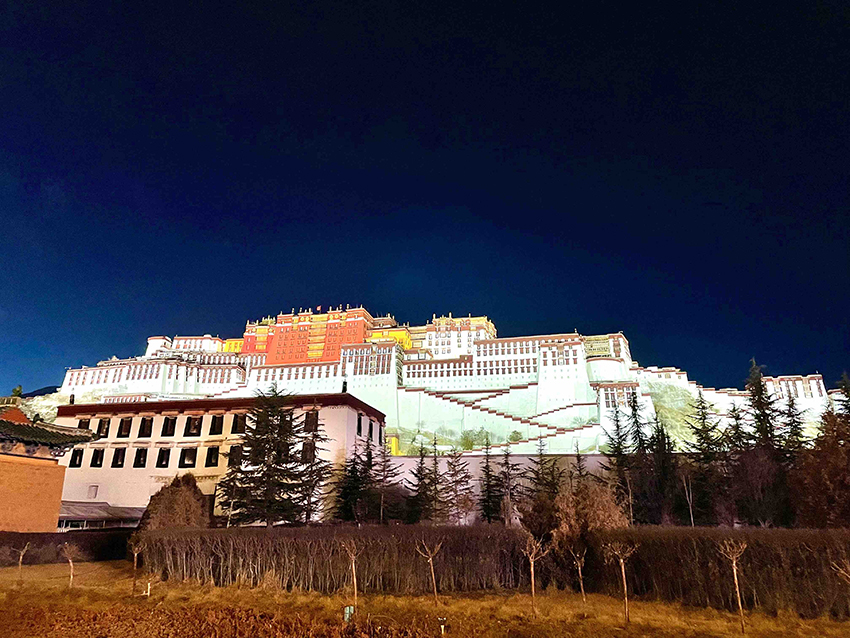
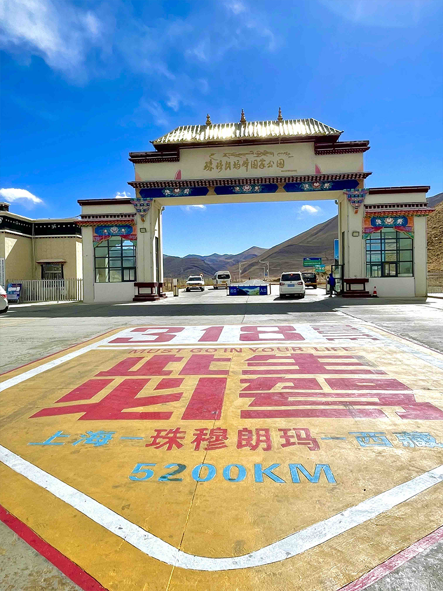
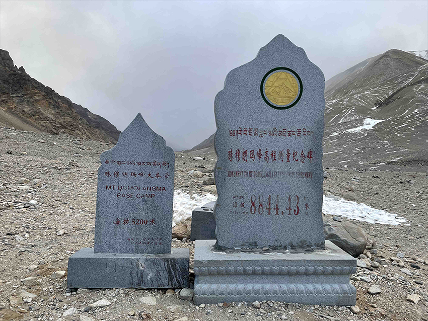

在中國外派三年多的時間，出去旅遊探索不同地方的特色是必不可少的生活調劑，走過中國這麼多城市，最令我印象深刻的地方就是位於世界屋脊的西藏，想去西藏的念頭來自於疫情前看的一部電影”攀登者”，雖然我無法像電影中的角色一樣挑戰那海拔八千多公尺的聖母峰，但我可以嘗試一個普通人能夠達到的最高高度-海拔五千二的珠峰大本營。
原本預計在2020年要去西藏的計畫被突如其來的疫情給打壞，即使終於去年等到政府公告西藏開放外賓進入，也在出發前一個月被取消，經過幾番周折，最後還是在今年過年成功出發了。
|  |
懷著緊張又期待的心，終於抵達了拉薩機場，天氣非常好但可以明顯感受到空氣相對於平地更稀薄，雖然很興奮但還是時刻提醒著自己深呼吸不要太激動。
|  |
每個人來過西藏的人都會提醒沒去過的人到西藏的第一天一定要好好休息， 在飯店休息到傍晚便出門閒逛，一路走到了布達拉宮，原本只能在歷史課本上面 看到的布達拉宮出現在眼前，比想像中更加雄偉還散發著聖光。
西藏是一個缺氧但不缺信仰的地方，所以這幾天參觀了非常多的寺廟，哲蚌寺是西藏最大的寺廟，也是達賴喇嘛的母寺，導遊說在這裡修行的喇嘛相對於一般人的學習過程就像是在讀正在讀博士班的學生。
色拉寺最有名的就是辯經，但其實他們辯論的不只是經文的內容，而是對於這個世界的理解，包含了天文地理歷史等等知識，我才知道修行的人不只是需要學習經文，還要學習其他的內容，才能內化成自己的智慧，但凡夫俗子如我，只想去養老院養老。
幸運地獲得了一次在西藏過農曆年的經驗，這個時候的拉薩是藏人最多的時候，因為漢人都回家鄉過年了，藏曆新年大約比農曆年晚了一個月，若是在那個時候來西藏玩也是很特殊的體驗。
|  |
越過了好幾座山，隨著海拔越來越高，天氣看起來非常的好，雖說到了珠穆朗瑪國家公園的入口，但其實還需要再兩三個小時的車程才會抵達珠峰大本營。
|  |
山上的天氣瞬息萬變，好不容易到了海拔五千二的大本營，原先期待著能夠看到珠峰本人以及晚上的漫天繁星，但天氣狀況不佳，聽說是暴風雪快來了，若是再不下山很有可能會被困在山上，只能匆匆地與紀念碑拍照就趕緊下山了。
因為這次的暴風雪沒辦法看到珠峰的日出，也因為封路無法去羊湖，但可以看到西藏的雪景也是一個難得的回憶，雖然同團的旅客不停的在抱怨很可惜，但這時候我在小紅書上看到有人在這幾天到西藏轉山碰上了暴風雪失溫離世了，這時候我覺得我自己非常的幸運，也在心裡做了一個再訪的決定。
旅程若是留下了一點小遺憾，也是為自己留下了再訪的機會，一個人這一生一定要去一次西藏，我決定我還要再去一次。